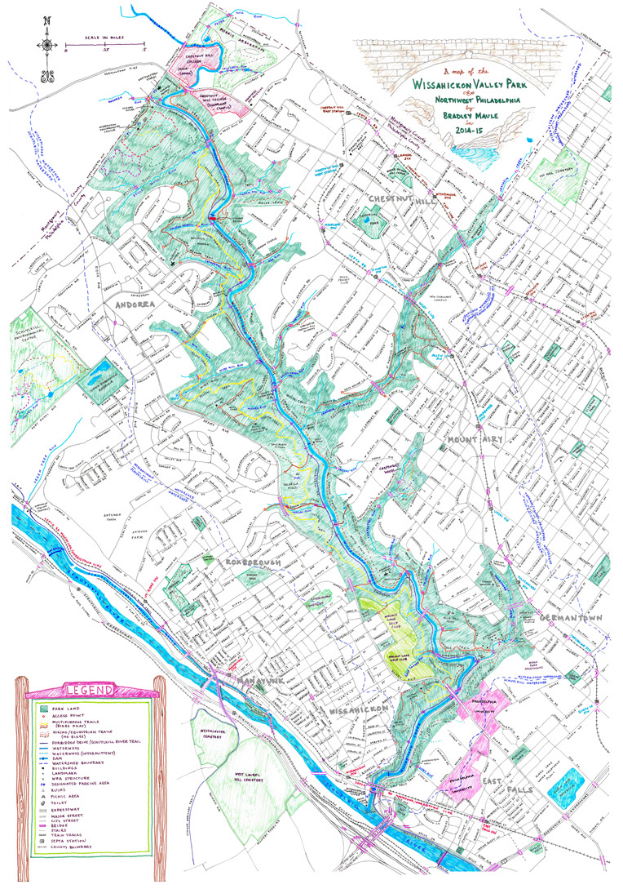

Shortly after moving to the Wissahickon neighborhood, I was looking for a detailed map of the Wissahickon Valley Park to plan some hikes and learn more about the woods. A lot of the maps I found through googling were either too detailed or not detailed enough, and almost none were interactive. One of the best maps I found was this one below - it has the right level of detail and big picture view I was looking for, but I never heard back from the creator about purchasing a print.

source: phillyskyline.com
After some more goolging I found this interactive map created by the Friends of the Wissahickon. It has a lot of the park attrractions I was looking for in a map, but I really wanted to be able to make it my own and document my hiking loops, notes and tips. Rather than just make a copy of the Google map, I decided to create my own using leaflet and R.
To get started, I created a copy of the Friends of the Wissahickon map and exported each layer (Kiosks, Parking, Trailheads…) as its own .KMZ file, then used https://www.gpsvisualizer.com/convert_input to convert the .KMZ file to .GPX. A .GPX file is basically XML flavored with some GPS data, so once I had the all of the .GPX files, I was able to use the amazing XML R package to parse the XML.
As someone used to working with dataframes, parsing XML in R can be tricky. Once I understood the structure of the XML, I was able to create a function to parse the file:
parse_hike_xml <-
function(file){
#import hike and parse
hike_xml <-
XML::xmlParse(file)
nodes <-
XML::getNodeSet(hike_xml, "//ns:trk", "ns")
rows <-
lapply(nodes, function(x) data.frame(xmlToList(x)))
#usable dataframe
plyr::ldply(rows, data.frame) %>%
reshape2::melt(id.vars = "name") %>%
mutate(type = ifelse(value < 0, "lng", "lat")) %>%
spread(type, value) %>%
mutate(lng = as.numeric(lng),
lat = as.numeric(lat),
type = "Hike") %>%
rename(desc = 2)
}Once I had the function I could read in each hike file, and use purrr to apply my function to each one. This automates almost all of the work - all I need to do is come up with a description for each new hike I add. These descriptions form the hover tool-tip when a user hovers over a route in the map.
#stage hike gpx files
hike_files <-
list.files('hikes/', pattern = "\\.gpx$")
master_hike <-
map(hike_files, ~parse_hike_xml(paste0("hikes/", .))) %>%
map_df(., bind_rows) %>%
mutate(name = as.character(name),
desc = case_when(
name == "Gorgas Creek Loop" ~ "Clockwise loop. Starts and ends at Mt Airy Trailhead. 1.49 Mi., 105 ft. elevation",
name == "Houston Meadows Loop" ~ "Counter-clockwise loop. Starts and ends at Houston Playground. 2.48 Mi., 325 ft. elevation",
name == "Andorra Meadow Loop" ~ "Clockwise loop. 1.52 Mi., 104 ft. elevation",
name == "Lavender/Orange Loop" ~ "Clockwise loop. Park on Crefeld and go through gated park entrance. 1.89 Mi., 233 ft. elevation",
TRUE ~ "other")
)I follow a similar process for adding in the markers for attractions, parking, trailheads…
The rest of the code is adding the map and layers using the awesome leaflet package. The map background changes depending user selection, and the user can also select to show certain hikes or not:
# create base map and select map style based on user input
wiss_map <-
if(input$map_style == "Simple"){
leaflet(map_data) %>%
addProviderTiles(providers$CartoDB.Positron) %>%
setView(lng = -75.21111265778796,
lat = 40.0493331396181,
zoom = 14
)
} else if(input$map_style == "Detailed") {
leaflet(map_data) %>%
addProviderTiles(providers$HikeBike.HikeBike) %>%
setView(lng = -75.21111265778796,
lat = 40.0493331396181,
zoom = 14
)
} else {
leaflet(map_data) %>%
addProviderTiles(providers$CartoDB.DarkMatter) %>%
setView(lng = -75.21111265778796,
lat = 40.0493331396181,
zoom = 14
)
}
#map it
if(input$hike_select == "None") {
wiss_map %>%
leaflet::addAwesomeMarkers(~lng,
~lat,
popup = ~ as.character(desc),
label = ~ as.character(name),
labelOptions = labelOptions(textsize = '13px'),
icon = ~ my_icons) %>%
addControl(html = markerLegendHTML(IconSet = IconSet),
position = "bottomleft")
} else {
wiss_map %>%
leaflet::addAwesomeMarkers(~lng,
~lat,
popup = ~ as.character(desc),
label = ~ as.character(name),
labelOptions = labelOptions(textsize = '13px'),
icon = ~ my_icons) %>%
setView(lng = mean(hike_data$lng),
lat = mean(hike_data$lat),
zoom = 15
) %>%
leaflet::addPolylines(hike_data$lng,
hike_data$lat,
weight = 8,
color = "#ff5719",
stroke = TRUE,
fillOpacity = 500,
label = unique(hike_data$desc),
labelOptions = labelOptions(textsize = '15px')) %>%
addControl(html = markerLegendHTML(IconSet = IconSet),
position = "bottomleft")
}You can check out all of the code for it on GitHub, or view the app itself: https://explorethewiss.brendangraham.online